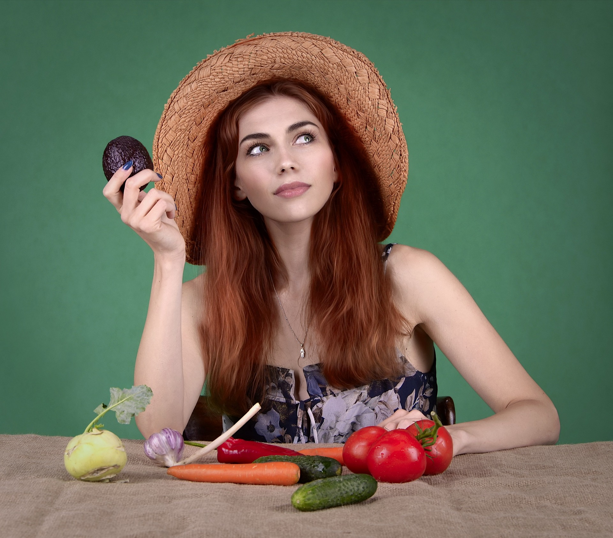

Nourish your life.
Welcome to a world of vibrant flavors and nourishing choices. Our mission is to inspire and guide you on your path to better health through the art of healthy eating. Explore our delicious recipes, expert tips, and resources to make informed, wholesome food choices.

What We Offer

- Indulge in the delicious world of vegan-friendly recipes that are perfect for everyone.

- Our recipes cater to both beginners and seasoned pros, ensuring a delightful experience for all skill levels.

- Dive deeper into a treasure trove of valuable resources and informative articles.

- Embark on a culinary journey with our vibrant and diverse creations that will delight your taste buds.
"As a devoted foodie,
I've explored countless websites, but this one is a true gem.
It's a haven for both beginners and seasoned pros, offering an array of
mouthwatering recipes, expert advice, and valuable resources.
The vegan-friendly options are a delightful bonus,
making it my go-to place for culinary inspiration."
—Sarah Adams, Food Enthusiast